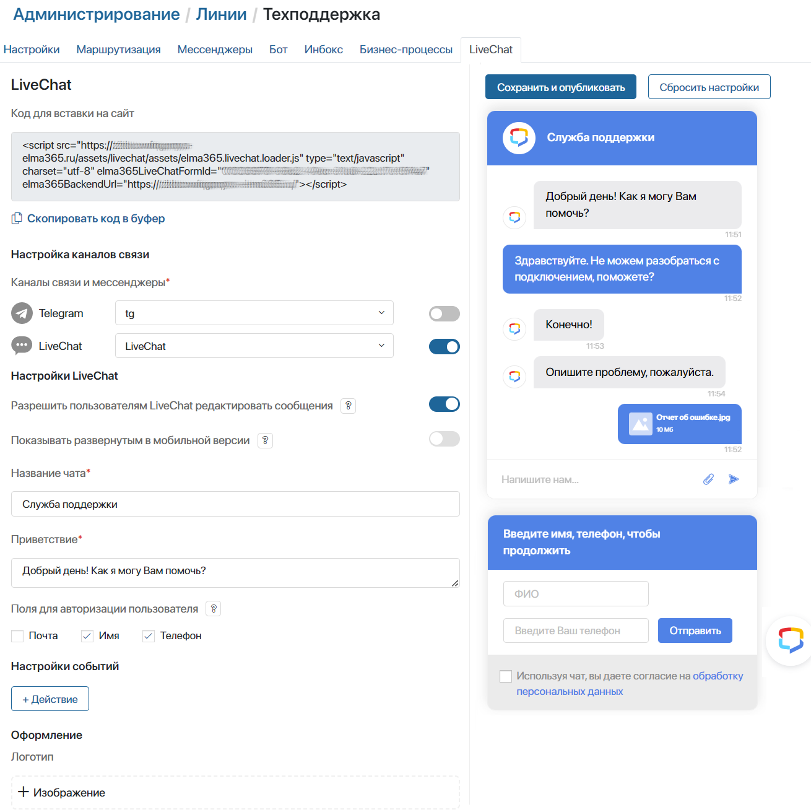

LiveChat — это онлайн-чат для общения с клиентами. При активированном решении ELMA365 Service вы можете настроить LiveChat в ELMA365, подключить его к линии, а затем разместить на стороннем сайте. Тогда посетители вашего сайта смогут отправлять запросы в онлайн-чат, а операторы отвечать на них из интерфейса ELMA365. При этом история переписки будет сохраняться в разделе Линии, а также в окне LiveChat у каждого клиента.
Если к линии подключены другие каналы связи, пользователь сможет перейти в них, нажав на значок мессенджера или почты в окне онлайн-чата. Таким образом можно выбрать, где общаться с оператором: на сайте в окне онлайн-чата, в мессенджере или по электронной почте.
Кроме того, когда для линии настроен ELMA Bot, он может также реагировать на запросы пользователей: предлагать оператору подсказки для сообщений или отвечать вместо него. Подробнее о режимах работы бота читайте в статье «Подключить бота к линии».
Начало внимание
Настройка LiveChat доступна только администраторам системы, если в компании активировано решение ELMA365 Service.
Конец внимание
Настроить чат
Для каждой линии необходимо создать отдельный онлайн-чат. Для этого:
- Перейдите в раздел Администрирование > Линии.
- Выберите линию из списка или создайте новую, нажав кнопку +Линия в правом верхнем углу.
- Перейдите на вкладку LiveChat и нажмите кнопку Включить в центре страницы.
В левой части вкладки отобразятся поля для настройки онлайн-чата, а в правой — его превью, которое будет автоматически изменяться в зависимости от установленных параметров.

- Установите параметры для онлайн-чата:
- Настройка каналов связи — с помощью переключателя отметьте каналы, через которые в раздел Линии будут поступать обращения с сайта. Для выбора доступны все подключённые к линии мессенджеры, социальные сети и почта со статусом Активен.
Список отмеченных каналов связи будет отображаться на сайте при нажатии кнопки вызова чата. Пользователь сможет выбрать способ отправки обращения:
- ВКонтакте, мессенджеры — пользователь автоматически перейдёт на страницу социальной сети или в веб-версию мессенджера;
- Inbox — пользователь заполнит форму отправки обращения на сайте в окне чата, а ответ оператора получит на почту;
- LiveChat — пользователь останется на сайте и будет общаться с оператором в окне чата.
- Настройки LiveChat — блок доступен, если в списке каналов отмечена опция LiveChat. Установите параметры для окна чата:
- Разрешить пользователям LiveChat редактировать сообщения — опция позволяет клиентам изменять свои сообщения, отправленные в LiveChat. Рядом с сообщением будет отображаться время его редактирования;
- Показывать развернутым в мобильной версии — при включённой опции окно чата на мобильных устройствах всегда отображается в развёрнутом виде. Это удобно, например, если на сайте предусмотрена отдельная страница для обратной связи.
Обратите внимание, если опция активна, пользователь не сможет обратиться в линию через мессенджер или электронную почту, даже если эти каналы настроены. В мобильной версии ему будет доступна только переписка в окне чата;
- Название чата* — укажите заголовок окна онлайн-чата, например, Служба поддержки;
- Приветствие* — введите текст, который будет видеть пользователь, открыв чат;
- Поля для авторизации пользователя — вместе с онлайн-чатом на сайте можно разместить окно авторизации. В нём пользователь указывает персональные данные, чтобы зарегистрироваться и начать переписку с оператором. Информация отобразится в обращении на странице созданной сессии. Для этого отметьте поля, которые будут заполняться пользователями: Почта, Имя, Телефон. Для окна авторизации доступны также дополнительные настройки текста и ссылки на политику обработки данных.
Если пользователь регистрируется при входе на сайт или портал, в котором размещён LiveChat, вы можете скрыть дополнительное окно авторизации рядом с онлайн-чатом. Для этого снимите все флажки в опции Поля для авторизации пользователей. Чтобы указанные при входе персональные данные пользователя передавались в сессию, настройте автоматическую авторизацию в LiveChat;
- Настройки Inbox — блок отображается, если в списке каналов отмечена опция Inbox. Установите параметры окна для отправки обращения:
- Приветствие* — введите текст, который увидит пользователь, открыв чат;
- Обязательность полей* — отметьте обязательные поля, которые должен заполнить пользователь, чтобы отправить сообщение. Поля Ваш Email и Тело письма отмечены по умолчанию. Дополнительно можно установить ФИО и Тема письма. Указанные данные будут отображаться на странице сессии;
- Настройки событий — настройте правила для автоматического раскрытия окна чата на сайте. Для этого нажмите кнопку + Действие. В открывшемся окне задайте параметры;
- Оформление — настройте внешний вид чата:
- Логотип — загрузите изображение, которое будет отображаться на кнопке вызова чата;
- Тема оформления — выберите основной цвет чата;
- Размер кнопки — задайте размер кнопки, открывающей чат;
- Позиционирование — настройте положение кнопки, открывающей чат:
- Расположение кнопки — укажите, в каком углу экрана будет располагаться кнопка;
- Отступ справа, Отступ слева, Отступ снизу, Отступ сверху — в зависимости от выбранного расположения кнопки задайте для неё отступы от краёв экрана, например справа и снизу. Отступы настраиваются отдельно для ПК и мобильных устройств. Минимальное значение — 0 пикселей, максимальное — 1000;
- Фон чата — выберите изображение для фона чата;
- Ссылка на политику обработки персональных данных — если вы добавили в онлайн-чат окно авторизации, пользователь указывает в нём контактные данные и предоставляет согласие на их обработку. Для этого он отмечает флажком специальное поле. По умолчанию в названии поля содержится гиперссылка, по которой можно перейти на страницу сайта с информацией о политике сбора данных. Вы можете указать URL-адрес этой страницы;
- Использовать произвольный текст согласия на обработку персональных данных — включите опцию и в появившемся редакторе измените текст специального поля в окне авторизации, которое должен отметить пользователь, чтобы отправить своё обращение.
- Для завершения настройки нажмите кнопку Сохранить и опубликовать в верхней части вкладки.
При необходимости вы можете привести вид онлайн-чата к оформлению по умолчанию. Для этого нажмите кнопку Сбросить настройки.
- Скопируйте сгенерированный код для вставки чата в сайт, нажав кнопку Скопировать код в буфер в верхней части вкладки.
- Разместите онлайн-чат на сайте или портале.
После этого посетители вашего сайта смогут воспользоваться чатом для отправки сообщений.
Если авторизованный на сайте пользователь впервые обращается в LiveChat, в разделе Линии создаётся новая сессия. При всех последующих обращениях этого пользователя сессия будет возобновляться. При каждом обращении неавторизованного пользователя в линиях будет создаваться новая сессия. Полученные сообщения будут обрабатываться оператором или чат-ботом.
При создании новой сессии с пользователем, обратившимся в линию через LiveChat, в ELMA365 автоматически фиксируются UTM-метки. Подробнее о работе с ними читайте в статье «UTM-метки в LiveChat».
Автоматически открывать окно LiveChat
При настройке LiveChat вы можете задавать правила, при срабатывании которых окно с размещённым на сайте чатом будет автоматически раскрываться. Например, пользователь увидит окно с чатом, в котором отображается приветствие, если проведёт на странице сайта больше двух минут.
Для настройки правил автораскрытия:
- Перейдите в Администрирование > Линии. Выберите нужную линию и откройте вкладку LiveChat.
- В блоке Настройки событий нажмите кнопку + Действие.
- В открывшемся окне заполните поля:
- Название* — введите название для события;
- Если выполняются условия — укажите, какое количество условий должно быть выполнено для автоматического раскрытия чата:
- Каждое — необходимо, чтобы сработали все настроенные условия;
- Любое — для выполнения правила достаточно одного выполненного условия.
Создайте условия для раскрытия чата. Для этого нажмите Выберите атрибут. Из открывшегося списка выберите значение, которое будет проверяться правилом:
- URL текущей страницы — выберите, где будет раскрываться чат. Чтобы окно с чатом появлялось только на определённой странице, выберите знак равенства и введите полный URL-адрес. Укажите опцию Содержит и часть адреса для открытия чата на всех страницах, в URL которых есть совпадения;
- Время на странице — укажите время в секундах, проведённое пользователем на определённой странице, после которого откроется онлайн-чат;
- Время на сайте — укажите время в секундах, проведённое пользователем на всех страницах сайта, после которого произойдёт автораскрытие чата;
- Действие* — выберите действие, которое произойдёт, если правило сработает:
- Открыть форму для отправки сообщения на e-mail — в открывшейся на сайте форме клиент сможет отправить запрос в линию и указать свою почту для получения ответа. Для этого действия к линии необходимо подключить электронную почту.
Обратите внимание, если включена опция Показывать развернутым в мобильной версии, обращение в линию через почту недоступно на мобильных устройствах;
- Отобразить системное сообщение в чате — на странице откроется окно с установленным в поле Сообщение текстом. Пользователь сможет отправить запрос в линию и получить ответ в окне чата;
- Сообщение* — введите текст, который увидит пользователь в окне чата. Поле отображается при выборе действия Отобразить системное сообщение в чате.
- Сохраните настроенное правило.
Список созданных правил отображается на вкладке LiveChat в блоке Настройки события. С помощью переключателя справа от названия вы можете выключить или включить правило.
Чтобы отредактировать или удалить правило, нажмите на значок и выберите действие.
- Для завершения настройки нажмите кнопку Сохранить и опубликовать в верхней части вкладки.